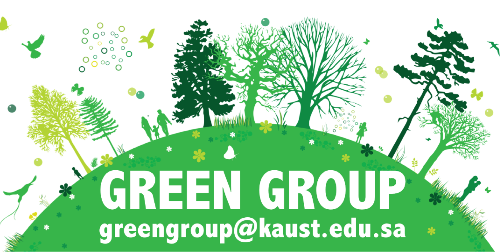
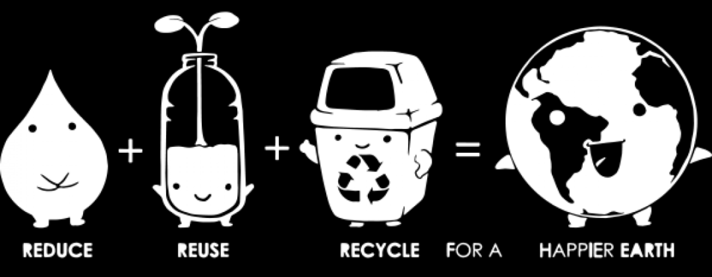

Less consumption waste reduction!
Our mission is promoting a zero-waste lifestyle for a
more sustainable and happier/healthier community
in and outside KAUST by:
- holding informative and engaging events and workshops;
- giving away useful and sustainable gadgets with a clear message and purpose;
- providing convenient and sustainable alternatives to disposables and wasteful routines;
- reducing consumption prior to recycling;
- improving and promoting reuse & recycling;
- collaborating with campus and community entities;
- engaging KAUST scholars and researchers in enriching dialogue related to the practical uses of science & technology to better our community, our environment and the world.

Contact Us
.